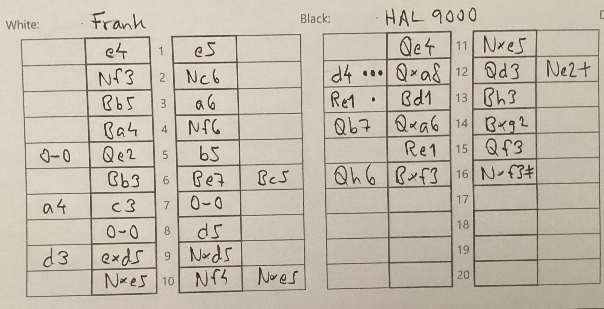

Home •
Klubben •
Medlemmar •
Jan-Christer Nilsson
Panorama
Det här schackprotokollet har två egenskaper:
-
Landskap. Det innebär att protokollet får bättre plats när schackbrädena är stora.
- 105 millimeter räcker (halv A4 landskap).
- Jämför med det vanliga 210 millimeter (A5 porträtt).
-
Det är avsett att kompletteras med en analys i de lediga kolumnerna
- ••• Blunder
- •• Misstag
- • Onoggrannhet
- Bästa drag
Vid utskrift rekommenderas dubbelsidigt och standardmarginaler.
Om man har tillgång till en pappersskärare (eller är händig med saxen) kan man få ut två protokoll per A4.
Qe2 är inte det bästa draget. 0-0 är bättre.
Qxa8 är en blunder. d4 är bättre.
Notera: HAL 9000 spelade nästan perfekt.
